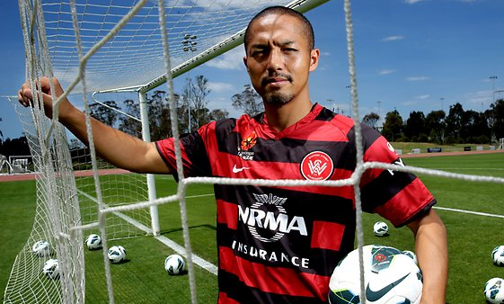

Mr Big Van De Ven Nguyen

Summary/Objective Statement
Office and Quality Assurance Guru with a drive for positive change
Education
- University of Canberra
- Bachelor of Information Technology - Graduated 2016
- Lake Tuggeranong College
- Year 12 Certificate - Achieved 2010
Work Experience
- 2021-Current
- Services Australia - EOC Testing Team - Test Engineer
- 2019-2021
- Services Australia - NDIA SIT Testing Team - Test Engineer
Skills
- Strong Communication Skills
- Adobe Photoshop skills
- Microsoft Office Skills
- Test Case Writing and Execution Skills
Awards, Certifications and Achievements
- Won Tester of the month at Services Australia
- Became the people's champion
More about me